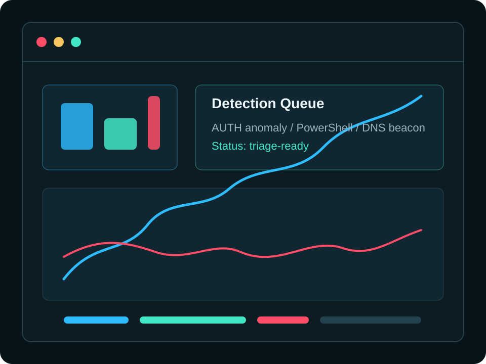

MCA Cybersecurity Student / SOC Analyst Track / Cloud Security
Cybersecurity proof of work for blue team, red team, and career growth.
I am an aspiring SOC Analyst building hands-on projects across Python security tooling, digital forensics, network security, AWS cloud fundamentals, and documented cyber labs.

Career mode switch
Choose the view: Blue Team, Red Team, or Career.
Showcase
Projects
Add your completed projects in script.js. Keep every project clear:
problem, tools, evidence, outcome, and GitHub proof.
Achievements
Certifications & Milestones
Add certifications, course completions, CTF milestones, internships, workshops, and important security learning wins here.
Resume / CV
Give HR one clean place to download the latest resume.
Replace the placeholder PDF in assets/resume/ with your actual resume using
the same file name.
Contact